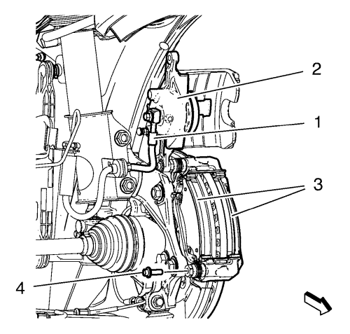
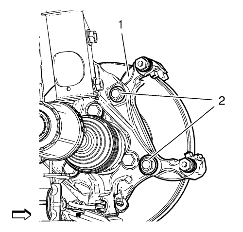
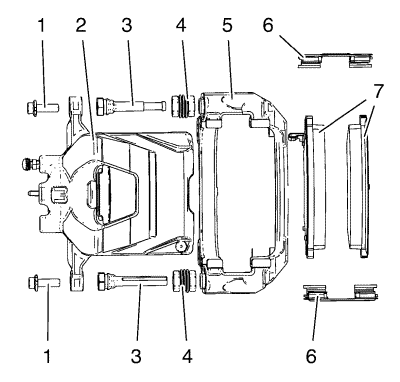

Sustitución del soporte de la pinza del freno delantero — Sistema de frenos de 15 pulgadas
Procedimiento de desmontaje
Advertencia: Consulte Advertencia relacionada con el polvo procedente de los frenos en la sección Prólogo.
- Compruebe el nivel de líquido del depósito del cilindro maestro del freno.
- Si el líquido de frenos está a mitad de camino entre el punto de llenado máximo y el nivel permitido mínimo no habrá que quitar nada de líquido de frenos del depósito.
- Si el líquido de frenos está a más cerca del punto de llenado máximo que del nivel permitido mínimo, quite líquido de frenos del depósito hasta que se quede en el punto medio.
- Elevar el vehículo y soportarlo de manera segura. Consultar Elevación y soporte en alto del vehículo .
- Desmonte la rueda del vehículo. Consultar Desmontaje y montaje de la rueda y el neumático .

- Extraiga el perno guía inferior de las pinzas de frenos (4). NO desconecte de la pinza (2) el latiguillo del freno hidráulico (1).
Atención: Sujete las pinzas de freno con alambre mecánico fuerte o equivalente cuando se separen del montaje y aún esté conectado el tubo flexible de freno hidráulico. Si no se sujetan las pinzas de esta manera, el tubo flexible de freno tendrá que soportar el peso de las pinzas, lo que puede provocar que se dañe el tubo flexible de freno y esto, a su vez, puede provocar una fuga de líquido de frenos.
- Sin desconectar el tubo flexible del freno hidráulico (1), gire la pinza (2) hacia arriba y sepárela del soporte de la pinza en la dirección de la flecha.
- Desmontar las pastillas de freno (3).

- Desmonte los muelles de seguridad de las pastillas de freno (1).
- Si se reutiliza el soporte, limpie completamente cualquier residuo de suciedad o corrosión en las superficies de conexión del herraje de la pastilla del soporte de la pinza.
- Revise lo siguiente en los muelles de seguridad de las pastillas de freno (1):
| • | Lengüetas de soporte torcidas |
| • | El soporte de fijación de la pinza de freno está suelto. |
| • | Pastillas de freno de disco sueltas |
- Si se encuentra cualquiera de las anomalías citadas, habrá que cambiar las fijaciones de la pastilla de disco de freno.

- Desmonte y DESECHE los pernos de soporte de la pinza (2).
- Desmonte el soporte de la pinza de freno (1) de la mangueta.

- Revise el soporte de la pinza (5). Si el soporte de la pinza de freno (5) esta doblado, rajado o dañado, se tiene que sustituir.
- Compruebe si los pasadores guía de la pinza de freno (3) tienen libertad de movimiento y compruebe el estado de las fundas de los pasadores guía (4). Mueva los pasadores guía de la pinza de freno (3) hacia dentro y hacia fuera dentro del soporte de la pinza de freno (5) sin desenganchar las correderas de las fundas (4) y observe lo siguiente:
| • | Movimiento limitado del pasador guía de la pinza |
| • | El soporte de fijación de la pinza de freno está suelto |
| • | Pasadores guía de la pinza agarrotados u obstruidos |
| • | Fundas rotas o desgarradas |
- Si se encuentra una de las situaciones que se indican, habrá que sustituir las espigas guía de la pinza del freno (3) y/o las fundas (4).
Procedimiento de montaje
- Monte el soporte de la pinza de freno (1) en la mangueta.
Advertencia: Consulte Aviso del fijador de par de apriete a rendimiento en la sección Prólogo.
Precaución: Consulte Precaución con las fijaciones en la sección Prólogo.
- Monte el NUEVO perno del soporte de la pinza de freno (2) y apriételo a 100 N·m (74 lib. pie) + 60° - 75°
- Aplique una capa muy fina de lubricante de frenos de silicona para alta temperatura a las superficies de conexión del herraje de la pastilla del soporte de la pinza solamente.
- Monte los muelles de seguridad de las pastillas de freno (1).
Nota: Se tiene que montar la pastilla de disco de freno equipada con sensor de desgaste en el interior del rotor con el borde primario del sensor encarado con el rotor de freno durante el movimiento hacia delante de las ruedas, o en la parte superior de la pastilla cuando se instala en posición de vehículo.
- Monte las pastillas de freno (3) en el soporte de la pinza de freno.
- Desmonte el soporte y reposicione la pinza de freno (2) sobre las pastillas de freno y en el soporte de la pinza. Asegúrese de que las fundas de los pernos guía están firmemente colocadas.
- Monte los pernos guía y apriételos a 28 N·m (21 lib. pie).
- Monte el conjunto de neumático y llanta. Consultar Desmontaje y montaje de la rueda y el neumático .
- Bajar el vehículo.
- Con el motor apagado, pise poco a poco el pedal del freno hasta aproximadamente 2/3 de su recorrido.
- Suelte lentamente el pedal.
- Espere 15 segundos, y entonces pise de nuevo gradualmente el pedal hasta aproximadamente 2/3 de su recorrido hasta que el pedal de freno quede aplicado firmemente. Esto asentará correctamente los pistones de la pinza de freno y las pastillas de freno.
- Llene el depósito auxiliar del cilindro maestro al nivel adecuado. Consultar Llenado del depósito acumulador de cilindro maestro .
| © Copyright Chevrolet. Reservados todos los derechos |